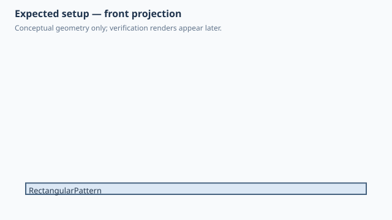

Forge model example
Native rectangular feature pattern
What this example makes
SolidCraft saves one plate with six slot cuts and one native rectangular pattern History feature that references the original Slot cut.

Forge code
This is the complete Forge source used for this example.
"""Native SolidCraft rectangular feature-pattern qualification."""
class RectangularPattern:
columns = 3
rows = 2
pitch = 24.0
row_pitch = 28.0
def build(self):
plate = Box(120, 80, 4, anchor=Anchor.BOTTOM)
with Sketch(name="Slot", on=plate) as slot:
SlotCenterToCenter2D((-5, 0), (5, 0), 6)
source_cut = slot.extrude(-4)
plate = plate - source_cut
return plate.rectangular_pattern(
source_cut,
count=self.columns,
spacing=self.pitch,
direction=Axis.X,
count2=self.rows,
spacing2=self.row_pitch,
direction2=Axis.Y,
)
RectangularPattern()
API used
source = slot.extrude(-4); body = body - source; body.rectangular_pattern(source, count=columns, spacing=pitch, direction=Axis.X, count2=rows, spacing2=row_pitch, direction2=Axis.Y)
Reference code
The same model is written independently with the reference libraries below. This makes it easier to compare modelling style and the resulting shape.
PythonSCAD
"""PythonSCAD geometry reference for the 3 x 2 rectangular slot pattern."""
from pythonscad import *
plate = cube([120, 80, 4], center=True).up(2)
def slot_cut(x, y):
bar = cube([10, 6, 8], center=True).translate([x, y, 2])
left = cylinder(d=6, h=8, center=True).translate([x - 5, y, 2])
right = cylinder(d=6, h=8, center=True).translate([x + 5, y, 2])
return bar | left | right
cutters = None
for y in (0, 28):
for x in (0, 24, 48):
cutter = slot_cut(x, y)
cutters = cutter if cutters is None else cutters | cutter
model = plate - cutters
pyBOSL2
"""pyBOSL2 geometry reference for the 3 x 2 rectangular slot pattern."""
from pybosl2 import cuboid, cyl
plate = cuboid([120, 80, 4]).up(2)
def slot_cut(x, y):
bar = cuboid([10, 6, 8]).translate([x, y, 2])
left = cyl(diameter=6, height=8).translate([x - 5, y, 2])
right = cyl(diameter=6, height=8).translate([x + 5, y, 2])
return bar | left | right
cutters = None
for y in (0, 28):
for x in (0, 24, 48):
cutter = slot_cut(x, y)
cutters = cutter if cutters is None else cutters | cutter
model = plate - cutters
CadQuery
"""CadQuery geometry reference for the 3 x 2 rectangular slot pattern."""
import cadquery as cq
points = [(x, y) for y in (0, 28) for x in (0, 24, 48)]
result = (
cq.Workplane("XY")
.box(120, 80, 4, centered=(True, True, False))
.faces(">Z")
.workplane()
.pushPoints(points)
.slot2D(16, 6)
.cutThruAll()
)
model = cq.Assembly()
model.add(result, name="rectangular_pattern")
build123d
"""build123d geometry reference for the 3 x 2 rectangular slot pattern."""
from build123d import (
Align,
Axis,
Box,
BuildPart,
BuildSketch,
Locations,
Mode,
SlotCenterToCenter,
extrude,
)
bottom = (Align.CENTER, Align.CENTER, Align.MIN)
points = [(x, y) for y in (0, 28) for x in (0, 24, 48)]
with BuildPart() as model:
Box(120, 80, 4, align=bottom)
with BuildSketch(model.faces().sort_by(Axis.Z)[-1]):
with Locations(*points):
SlotCenterToCenter(10, 6)
extrude(amount=-4, mode=Mode.SUBTRACT)
How Forge builds it in SolidCraft
Forge emits the source Sketch/cut once, then exactly one solid.pattern.rectangular with features=['Slot']; columns/rows are dimensionless native parameters and pitches remain millimetre parameters.
Show generated SolidCraft commands
parameters.add
parameters.add
parameters.add
parameters.add
solid.box
model.faces
sketch.create
sketch.slot.center_to_center
sketch.finish
solid.extrude
solid.pattern.rectangularSolidCraft result
Technical test details
Q1 and Q2 tests
These are the exact automated tests used for this example.
- Q1 NOT RUN
- Q2 NOT RUN
Geometry checks
These are the sizes and measurement points used by the automated checks.
| Body | Minimum | Maximum |
|---|---|---|
| RectangularPattern | [-60, -40, 0] | [60, 40, 4] |
- Is the size check enough for this model? No — The six slot cuts do not change the plate envelope. Volume and 3D slot-wall probes are required.
- Views checked: top, right, iso
- Internal features checked: 6
- Expected volume: 36281.415986824606 mm³ (±50.0 mm³)
- Closed solid expected: True
- Surface points checked: 18
Show all geometry check points
Internal features
- slot 1,1: width 6.0 mm, 2 centre-line points, Z
[0.0, 4.0] - slot 2,1: width 6.0 mm, 2 centre-line points, Z
[0.0, 4.0] - slot 3,1: width 6.0 mm, 2 centre-line points, Z
[0.0, 4.0] - slot 1,2: width 6.0 mm, 2 centre-line points, Z
[0.0, 4.0] - slot 2,2: width 6.0 mm, 2 centre-line points, Z
[0.0, 4.0] - slot 3,2: width 6.0 mm, 2 centre-line points, Z
[0.0, 4.0]
Surface measurement points
- slot 1,1 at z=0.5: point
[0.0, 0.0, 0.5]→ 3.0 mm (±0.3 mm) - slot 1,1 at z=2: point
[0.0, 0.0, 2.0]→ 3.0 mm (±0.3 mm) - slot 1,1 at z=3.5: point
[0.0, 0.0, 3.5]→ 3.0 mm (±0.3 mm) - slot 2,1 at z=0.5: point
[24.0, 0.0, 0.5]→ 3.0 mm (±0.3 mm) - slot 2,1 at z=2: point
[24.0, 0.0, 2.0]→ 3.0 mm (±0.3 mm) - slot 2,1 at z=3.5: point
[24.0, 0.0, 3.5]→ 3.0 mm (±0.3 mm) - slot 3,1 at z=0.5: point
[48.0, 0.0, 0.5]→ 3.0 mm (±0.3 mm) - slot 3,1 at z=2: point
[48.0, 0.0, 2.0]→ 3.0 mm (±0.3 mm) - slot 3,1 at z=3.5: point
[48.0, 0.0, 3.5]→ 3.0 mm (±0.3 mm) - slot 1,2 at z=0.5: point
[0.0, 28.0, 0.5]→ 3.0 mm (±0.3 mm) - slot 1,2 at z=2: point
[0.0, 28.0, 2.0]→ 3.0 mm (±0.3 mm) - slot 1,2 at z=3.5: point
[0.0, 28.0, 3.5]→ 3.0 mm (±0.3 mm) - slot 2,2 at z=0.5: point
[24.0, 28.0, 0.5]→ 3.0 mm (±0.3 mm) - slot 2,2 at z=2: point
[24.0, 28.0, 2.0]→ 3.0 mm (±0.3 mm) - slot 2,2 at z=3.5: point
[24.0, 28.0, 3.5]→ 3.0 mm (±0.3 mm) - slot 3,2 at z=0.5: point
[48.0, 28.0, 0.5]→ 3.0 mm (±0.3 mm) - slot 3,2 at z=2: point
[48.0, 28.0, 2.0]→ 3.0 mm (±0.3 mm) - slot 3,2 at z=3.5: point
[48.0, 28.0, 3.5]→ 3.0 mm (±0.3 mm)
Saved-design test
Checked in the saved model. Required because columns and pitch are saved native pattern parameters. Change columns from 3 to 2 and pitch from 24 to 30 mm in the saved .sc design; the pattern must rebuild to a 2 x 2 layout without rerunning Python while retaining one source Slot cut and one RectangularPatternFeature.
Raw test files
- Forge fixture source
- PythonSCAD reference source
- pyBOSL2 reference source
- CadQuery reference source
- build123d reference source
- Generated command JSON in build output
Reference documentation
- SolidCraft: Native Q2-Q4 additionally prove one saved RectangularPatternFeature. The four comparison libraries independently prove the final 3 x 2 slot geometry.